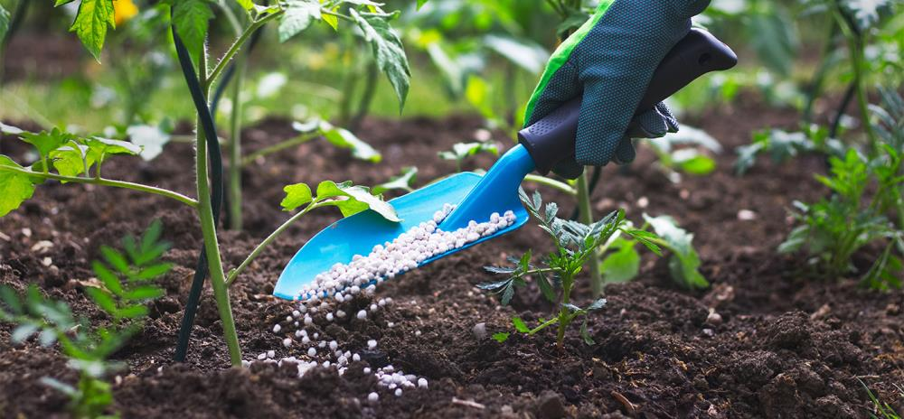
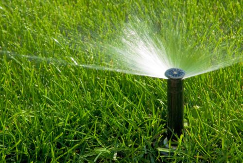
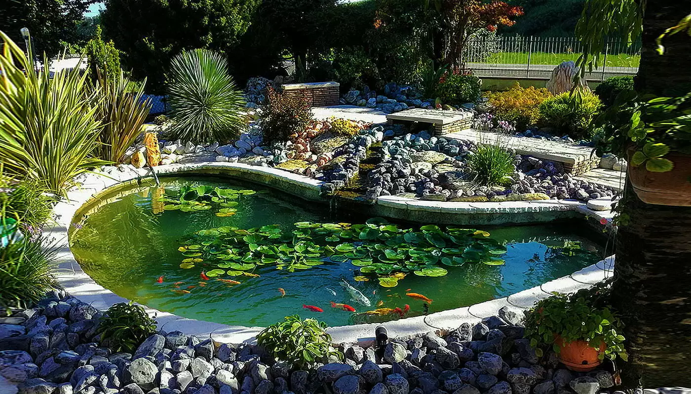
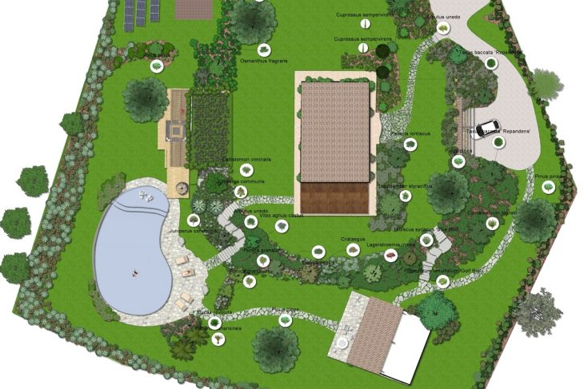

Benvenuti nel Mondo di Terra Verde Giardini
Esplorando la bellezza del giardinaggio con Terra Verde Giardini
Nel cuore di ogni giardiniere c'è un desiderio di trasformare il verde in un'opera d'arte, e in Terra Verde Giardini, questo desiderio diventa realtà. Siamo un'azienda appassionata che si impegna a fornire prodotti di alta qualità e servizi eccellenti per soddisfare ogni esigenza dei nostri clienti nel mondo del giardinaggio. Nel nostro shop potrete trovare una vastissima gamma di prodotti, dai semi alle attrezzature da giardino, dai concimi agli impianti di irrigazione, fino ad una consulenza completa alla progettazione del vostro giardino dei sogni.
Semi di Eccellenza
Nutrendo il Futuro del Tuo Giardino
Alla base di ogni grande giardino ci sono semi di alta qualità. Da semi di ortaggi a quelli di erbe aromatiche e piante da giardino, la nostra vasta gamma offre opportunità infinite per coltivare e creare spazi verdi vivaci e rigogliosi. Ecco alcuni esempi dei semi che potrete trovare presso il nostro punto vendita:
- Basilico (Ocimum basilicum) - Una pianta aromatica molto popolare, il basilico aggiunge un delizioso aroma e sapore ai piatti culinari.
- Rosmarino(Rosmarinus officinalis) - Con le sue foglie sottili e profumate, il rosmarino è ideale per aggiungere aroma a piatti di carne, pesce e verdure grigliate.
- Prezzemolo(Petroselinum crispum) - Il prezzemolo è una pianta aromatica versatile utilizzata in una vasta gamma di piatti, dalla cucina mediterranea a quella internazionale.
- Menta(Mentha) - Con la sua freschezza e il suo aroma distintivo, la menta è ottima per tisane, cocktail, insalate e dessert.
- Timo(Thymus vulgaris) - Il timo è una pianta aromatica resistente e versatile, perfetta per condire piatti di carne, zuppe, salse e altro ancora.
- Pomodori(Solanum lycopersicum) - I semi di pomodoro sono essenziali per coltivare una varietà di pomodori succulenti, ideali per insalate, salse e piatti cucinati.
- Zucche(Cucurbita pepo) - I semi di zucca offrono la possibilità di coltivare una vasta gamma di varietà, perfette per zuppe, torte, e dolci autunnali.
- Peperoni(Capsicum annuum) - I semi di peperone consentono di coltivare peperoni dolci o piccanti, che possono essere utilizzati crudi nelle insalate, grigliati o ripieni.
- Lattuga(Lactuca sativa) - I semi di lattuga consentono di coltivare una varietà di foglie verdi, ideali per insalate fresche e croccanti o per aggiungere croccantezza ai panini e ai wrap.
- Carote(Daucus carota) - I semi di carota sono perfetti per coltivare questa radice croccante e dolce, ottima da consumare cruda come snack o come ingrediente principale in zuppe e stufati.

Strumenti Affidabili
La Forza dietro ogni Progetto di Giardinaggio
Il giardinaggio richiede strumenti affidabili e di alta qualità, e noi lo capiamo bene. Dai rastrelli alle cesoie, dalle vanghe ai tagliasiepi, la nostra vasta selezione di attrezzi garantisce che ogni compito nel giardino sia eseguito con precisione e facilità. Ecco alcuni degli attrezzi che potrete trovare nel nostro punto vendita:
- Rastrello - Utile per livellare il terreno, rimuovere detriti e preparare il terreno per la semina.
- Zappa - Perfetta per rompere il terreno compatto, rimuovere le erbacce e scavare buche per piantare.
- Forbici da potatura - Ideali per tagliare rami più piccoli, arbusti e fiori.
- Tagliasiepi - Utili per mantenere bordi puliti intorno a siepi e cespugli.
- Guanti da giardinaggio - Proteggono le mani da spine, tagli e schegge durante il lavoro in giardino.
- Annaffiatoio - Essenziale per fornire acqua alle piante in modo mirato e controllato.
- Vanga - Perfetta per scavare buche profonde per piantare alberi, arbusti e piante
- Carriola - Utile per trasportare detriti, terra, concime e altri materiali da giardino.
- Spruzzatore - Ideale per applicare fertilizzanti, pesticidi o erbicidi in modo uniforme sulle piante.
- Troncarami - Utile per tagliare rami più spessi e per la potatura di alberi e arbusti.
- Forbici per erba - Perfette per rifinire i bordi del prato e tagliare l'erba intorno a fiori e piante.
- Paletta da giardino - Utile per trapiantare piccole piante, rimuovere erbacce e raccogliere piccoli detriti.

Fertilizzanti per una Crescita Rigogliosa
Nutrire la Terra, Nutrire il Giardino
Per garantire una crescita sana e vigorosa delle piante e dei fiori, offriamo una gamma completa di fertilizzanti, sia organici che chimici. I nostri fertilizzanti sono progettati per fornire nutrienti essenziali per il terreno e promuovere una crescita rigogliosa e abbondante.

Irrigazione Efficiente
Mantenere il Tuo Giardino Splendente
Un giardino ben curato ha bisogno di un sistema di irrigazione efficiente. Con la nostra gamma di attrezzature per l'irrigazione, tra cui tubi da giardino, irrigatori e spruzzatori, garantiamo che ogni pianta riceva l'acqua di cui ha bisogno per prosperare.

Decorazioni per un Giardino Incantevole
Aggiungi un Tocco di Magia
Oltre a fornire tutto il necessario per far crescere un giardino rigoglioso, offriamo anche una vasta selezione di decorazioni per il giardino, tra cui fontane, statue e ornamenti per piante. Questi elementi aggiungono un tocco di bellezza e personalità a qualsiasi spazio verde.

Consulenza Esperta
Guida verso il Giardino dei Tuoi Sogni
Presso Terra Verde Giardini, non siamo solo un negozio di giardinaggio, siamo anche tuoi consulenti personali. Offriamo un servizio di consulenza specializzato per aiutare i nostri clienti a progettare e realizzare il giardino dei loro sogni. Immagini dei nostri esperti in azione possono essere inserite in questa sezione per mostrare il nostro impegno nel fornire un servizio clienti eccezionale.

Vienici a trovare
In conclusione, da semi di alta qualità a strumenti affidabili, da fertilizzanti rigogliosi a decorazioni incantevoli, Terra Verde Giardini è la destinazione definitiva per tutti gli amanti del giardinaggio. Con una forte propensione alla qualità e al servizio, siamo qui per aiutarti a trasformare ogni angolo verde in un'oasi di bellezza e serenità.